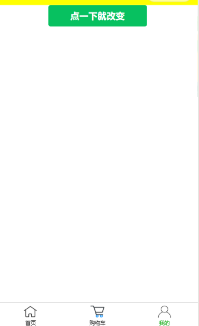
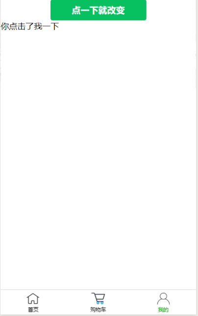

Duration :3:00
在小程序中如何利用button按钮来实现控制条件标签的变量呢？这也许是许多小伙伴们的问题，今天我就来简单的给大家演示一遍。
Duration :10:00
首先打开微信公众平台，将一个primary的button按钮代码复制到开发平台上，再为其绑定一个名为"bindfirst"的事件，（当然这个bindfirst的事件需要在js中去定义，下面的步骤我将会去定义）代码如下；
<view>
<button type="primary" bindtap="bindfirst"> 点一下就改变 </button>
</view>
我们创建一个text用来if条件标签来控制，同时再js中定义为一个空的量，
我们将if条件的定义一个judge变量给其赋值为true（if 条件标签如果为true，则显示text，如果为false则不显示text），再在button所绑定的事件中去改变text的值即可。代码如下；
<view>
<button type="primary" bindtap="bindfirst"> 点一下就改变 </button>
<text wx:if="{{judge}}">{{text}}</text>
</view>
Page({
data: {
text:[],
judge:true,
},
onLoad: function () {
},
bindfirst:function(){
var s=this.data.judge
this.setData({text:"你点击了我",judge:!s})
}
})
当我们点击一次时，会出现text，当点击第二次时就会关闭text，因为bindfirst中利用改变judge的值为true和false来达到改变text。

Duration :5:00
当我们点击button时就会触发绑定的bindfirst事件，而bindfirst事件中是text的变量，而data中所定义的text是一个空值，当我们点击时就会改变text中的量，从而达到简单的if条件标签的用button来控制。